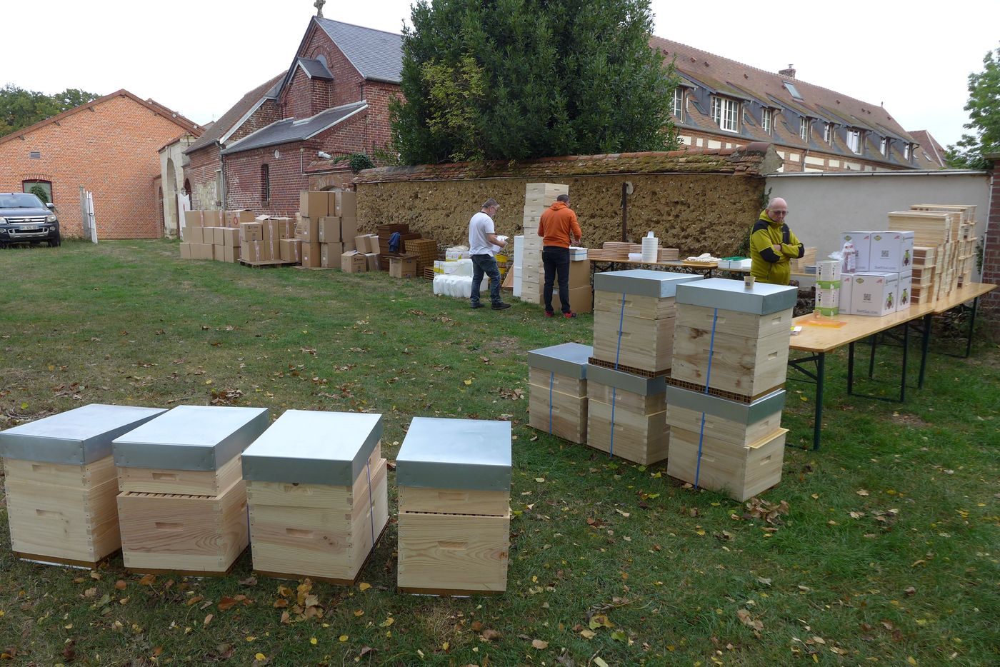
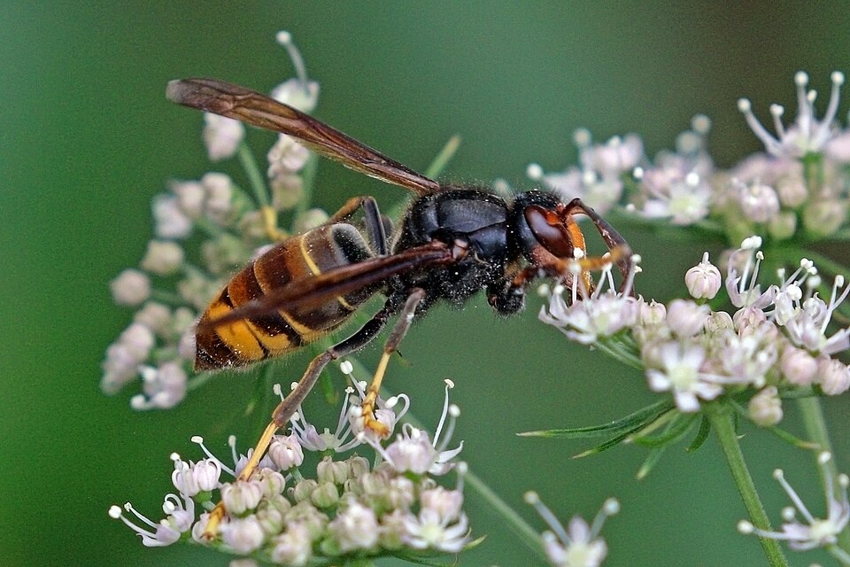
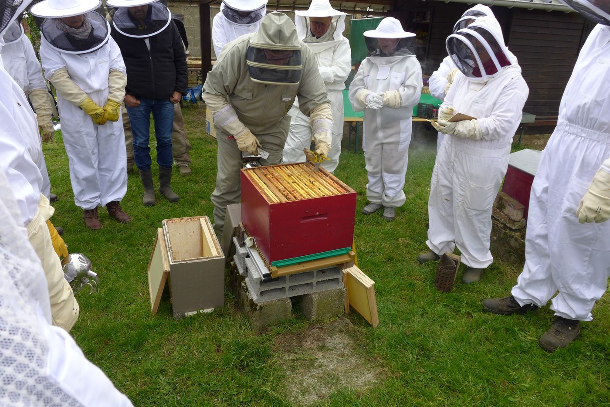

Lutte contre le varroa
Campagnes de traitement coordonnées, distribution de médicaments autorisés et suivi de leur efficacité.
TraitementsGroupement de Défense Sanitaire Apicole de l'Oise
Le GDSA 60 organise la lutte collective contre les maladies et les prédateurs de l'abeille : varroa, loques, frelon à pattes jaunes et nouvelles menaces. Il informe, conseille et accompagne tous les apiculteurs du département.
Une colonie malade menace les ruchers voisins : la santé des abeilles est l'affaire de tous. Le GDSA coordonne la prophylaxie à l'échelle du département.

Campagnes de traitement coordonnées, distribution de médicaments autorisés et suivi de leur efficacité.
Traitements
Piégeage des fondatrices, déclaration des captures et application des plans régional et national de lutte.
Lutte contre le frelon
Reconnaître les signes d'une maladie, savoir quoi déclarer et à qui, réagir face à une mortalité anormale.
Que signaler ?Des repères généraux, à adapter à la météo, à l'état de vos colonies et aux conseils de votre vétérinaire.
| Saison | Points de vigilance |
|---|---|
| Printemps | Première visite : état du couvain, de la reine et des réserves. Piégeage des fondatrices de frelon à pattes jaunes. |
| Été | Surveillance de l'infestation varroa (comptages). Traitement dès la dernière récolte retirée. Protection des ruchers contre le frelon. |
| Automne | Contrôle des provisions et nourrissement. Vérification de l'efficacité du traitement d'été. |
| Hiver | Traitement complémentaire hors couvain si nécessaire. Déclaration annuelle des ruches avant le 31 décembre. Mise à jour du registre d'élevage. |
Loque américaine, petit coléoptère de la ruche (Aethina tumida), Tropilaelaps, mortalité massive et soudaine : ces situations se déclarent aux services vétérinaires de l'État. Ne déplacez pas les ruches et conservez des échantillons.
La marche à suivreRappel : la déclaration annuelle des ruches est obligatoire dès la première ruche, entre le 1er septembre et le 31 décembre. Elle permet d'être prévenu en cas d'alerte sanitaire dans votre secteur.
L'adhésion se fait avec l'association Oise Apicole : accès aux distributions de traitements, aux informations sanitaires et aux conseils.